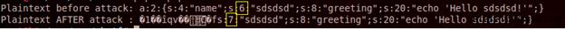
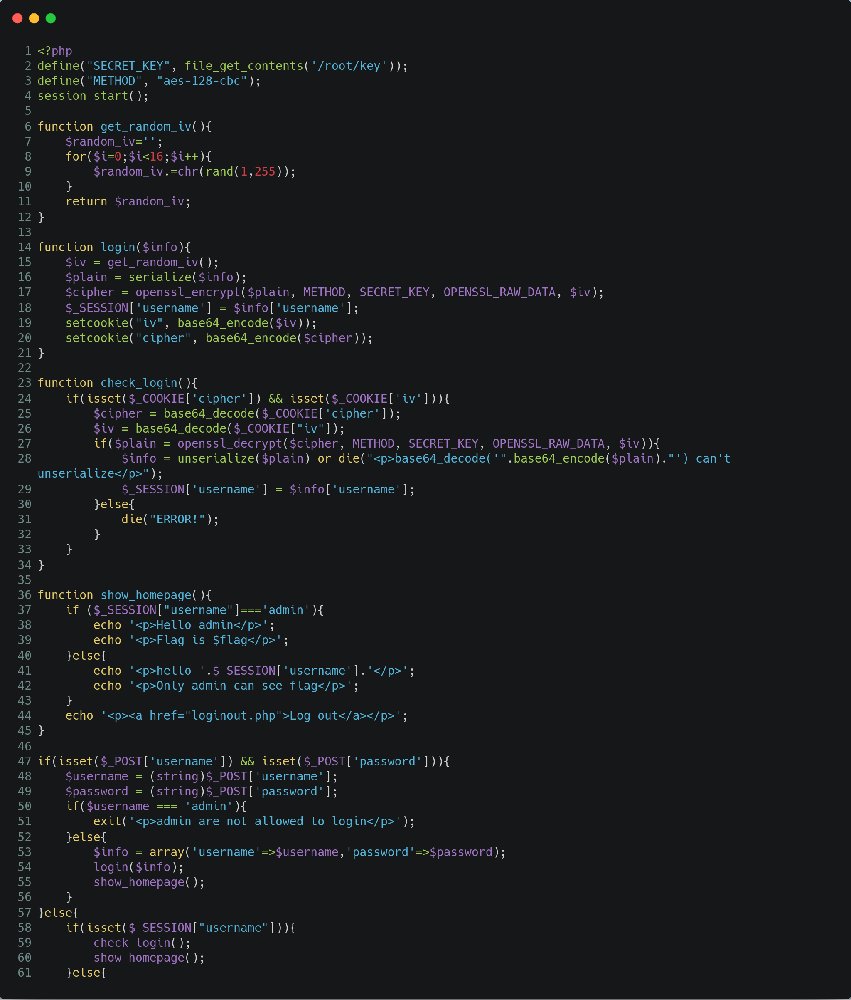
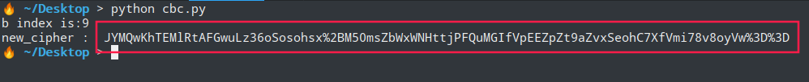
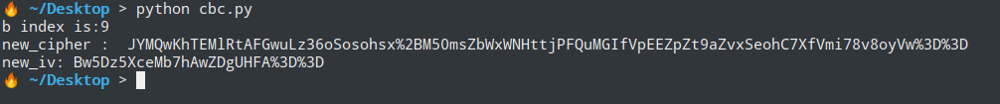
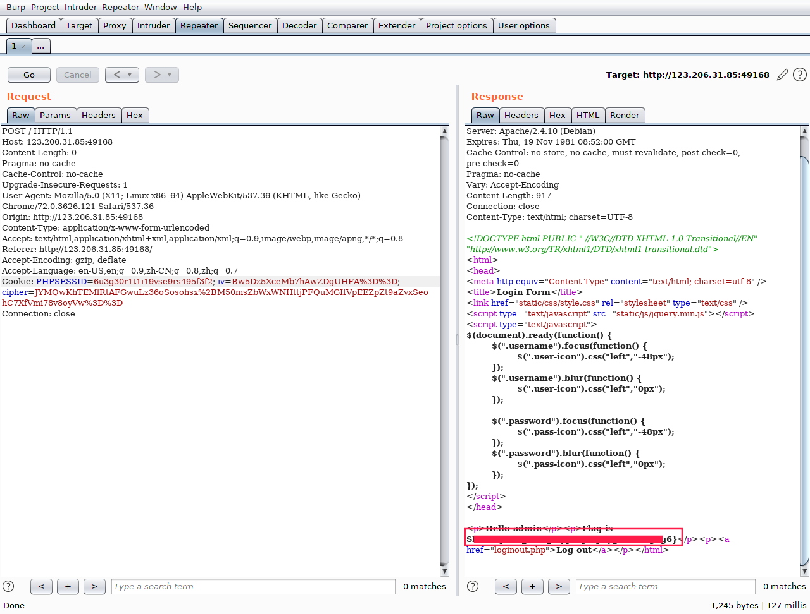

分组密码工作模式 分组密码工作模式
密码学中，分组（block）密码的工作模式（mode of operation）允许使用同一个分组密码密钥对多于一块的数据进行加密，并保证其安全性。[1][2] 分组密码自身只能加密长度等于密码分组长度的单块数据，若要加密变长数据，则数据必须先被划分为一些单独的密码块。通常而言，最后一块数据也需要使用合适填充方式将数据扩展到匹配密码块大小的长度。一种工作模式描述了加密每一数据块的过程，并常常使用基于一个通常称为初始化向量的附加输入值以进行随机化，以保证安全[1]。
这段话说的意思是对明文进行分块，分成相同字节的块数据。先使用等长字节数初始向量进行加密对第一块明文，之后的每一明文块都使用想同长度的密文块对明文块进行加密。所以可知密文和明文的每一个字节是一一对应的。解密也是如此，字节数相同的明文块和密文块进行解密。
密码块链接（CBC） 加密过程： Ciphertext-0 = Encrypt(Plaintext XOR IV)—只用于第一个组块 Ciphertext-N= Encrypt(Plaintext XOR Ciphertext-N-1)—用于第二及剩下的组块
Plaintext ：待加密的数据。IV ：用于随机化加密的比特块，保证即使对相同明文多次加密，也可以得到不同的密文。Key ：被一些如AES的对称加密算法使用。Ciphertext ：加密后的数据。
解密过程 Plaintext-0 = Decrypt(Ciphertext) XOR IV—只用于第一个组块 Plaintext-N= Decrypt(Ciphertext) XOR Ciphertext-N-1—用于第二及剩下的组块
攻击过程 Ciphertext-N-1（密文-N-1) 是用来产生下一块明文；这就是字节翻转攻击开始发挥作用的地方Ciphertext-N-1（密文-N-1） 的一个字节，然后与下一个解密后的组块异或，我们就可以得到一个不同的明文了！
攻击过程详解 先看解密过程
Plaintext-0 = Decrypt(Ciphertext) XOR IV—只用于第一个组块 Plaintext-N= Decrypt(Ciphertext) XOR Ciphertext-N-1—用于第二及剩下的组块 明文= Descrypt(本组密文) ^ 上组密文 *
C = A ^ B
通俗公式推导 1 2 3 4 5 6 7 数学公式异或关系表达式如下 A ^ A =0 , B^ B =0 , 0^ 0 =0 , 0 ^ 任一字符= 任一字符 可得 A ^ B ^ C=A^ B ^ A ^ B = 0 综合所述CBC字节翻转公式： A ^ B ^ C =0 => A ^ B ^ C ^ " 想要字符"=A ^ B ^A ^ B ^ "想要字符" = 0 ^ “想要字符” = “想要字符” 通俗讲：想要字符 = 本组密文(A) ^ 上组密文(B) ^ 本组明文字节(C) ## 本组密文，上组密文对应位置该字符
借用CBC字节翻转攻击-101Approach 中PHP脚本中演示翻转结果
1 2 3 4 $v = "a:2:{s:4:"name";s:6:"sdsdsd";s:8:"greeting";s:20:"echo 'Hello sdsdsd!'";}"; $enc = @encrypt($v); $enc[2] = chr(ord($enc[2]) ^ ord("6") ^ ord ("7")); $b = @decrypt($enc);
可以看到 6 被翻转为 7
CTF 
代码分析 通读全篇代码并未对password进行验证，而是关注于username验证。username 和 password。先进入第76 行进行验证，如果是以admin进行登入则会显示登录失败。63 行，拿到flag需要使用admin进行登入，所以这里与第76 行代码产生矛盾。cookie session进行登入，程序会进入第84 行，会执行两个方法check_login()和show_homepage()。 show_homepage()是我们拿到flag的方法入口。而在check_login()，通过解密在$_SESSION['username'] = $info['username']; 下会对username重新赋值.cbc字节翻转 对cipher中的登入账户的某个字节进行翻转得到"admin"
解题过程 根据我们上述的方法，编写python代码得到新的cipher ， new_cipher
1 2 3 4 5 6 7 8 9 10 11 12 13 14 15 16 17 18 19 import base64 import urllib offset=0 cipher='JYMQwKhTEMlRtwFGwuLz36oSosohsx%2BM50msZbWxWNHttjPFQuMGIfVpEEZpZt9aZvxSeohC7XfVmi78v8oyVw%3D%3D' cipher=base64.b64decode(urllib.unquote(cipher)) serialize_info='a:2:{s:8:"username";s:5:"bdmin";s:8:"password";s:5:"admin";}' serialize_info1=serialize_info[0:16] serialize_info2=serialize_info[16:32] serialize_info3=serialize_info[32:] array_seria=[serialize_info1,serialize_info2,serialize_info3] for i in range(0,len(array_seria[1])): if array_seria[1][i]=='b' in array_seria[1]: print(str(array_seria[1][i])+' index is:'+str(i)) offset=i new_cipher = cipher[:offset] + chr(ord(cipher[offset])^ord("b")^ord("a")) + cipher[offset+1:] print('new_cipher : '+urllib.quote_plus(base64.b64encode(new_cipher)))

放入burpsuite中替换cipher
提示反序列化失败，对返回的base64代码进行解码
解决首字块乱码 发现前16个字节块反序列化失败，所以这里可以知道cbc加密是分16字节每块进行加密。因为第一块明文加密是使用iv初始向量进行加密，而用于一同解密的密文被我们改变,造成解密出现不可预知的乱码。
1 2 3 4 5 根据第一块解密公式 Plaintext-0 = Decrypt(Ciphertext) XOR IV 可得新向量 new_iv = Plaintext-0 ^ Decrypt(Ciphertext) 新的初始向量 = 十六字节明文 ^ Decrypt(前十六字节密文new_cipher)
编写python代码如下
1 2 3 4 5 6 new_iv='' for j in range(0,16): new_iv=new_iv+chr(ord(iv[j]) ^ ord(res[j]) ^ ord(array_seria[0][j])) new_iv=urllib.quote(base64.b64encode(new_iv)) print('new_iv: '+new_iv)

将新iv,cipher 替换旧iv , cipher可得flag

解题python代码 1 2 3 4 5 6 7 8 9 10 11 12 13 14 15 16 17 18 19 20 21 22 23 24 25 26 27 28 29 import base64 import urllib offset=0 cipher='JYMQwKhTEMlRtwFGwuLz36oSosohsx%2BM50msZbWxWNHttjPFQuMGIfVpEEZpZt9aZvxSeohC7XfVmi78v8oyVw%3D%3D' cipher=base64.b64decode(urllib.unquote(cipher)) serialize_info='a:2:{s:8:"username";s:5:"bdmin";s:8:"password";s:5:"admin";}' serialize_info1=serialize_info[0:16] serialize_info2=serialize_info[16:32] serialize_info3=serialize_info[32:] array_seria=[serialize_info1,serialize_info2,serialize_info3] for i in range(0,len(array_seria[1])): if array_seria[1][i]=='b' in array_seria[1]: print(str(array_seria[1][i])+' index is:'+str(i)) offset=i new_cipher = cipher[:offset] + chr(ord(cipher[offset])^ord("b")^ord("a")) + cipher[offset+1:] print('new_cipher : '+urllib.quote_plus(base64.b64encode(new_cipher))) res = base64.b64decode('X2+7PVoBz5Fx/1OCajQkHm1lIjtzOjU6ImFkbWluIjtzOjg6InBhc3N3b3JkIjtzOjM6IjEyMyI7fQ=='); iv = base64.b64decode(urllib.unquote('OVvKyLSujW%2BwWSroAUNNaw%3D%3D')); new_iv='' for j in range(0,16): new_iv=new_iv+chr(ord(iv[j]) ^ ord(res[j]) ^ ord(array_seria[0][j])) new_iv=urllib.quote(base64.b64encode(new_iv)) print('new_iv: '+new_iv)
mochazz学长的python代码 1 2 3 4 5 6 7 8 9 10 11 12 13 14 15 16 17 18 19 20 21 22 import urllib,base64,requests,re url = "http://*.*.*.*/index.php" datas = { "username" : "Admin", "password" : "admin" } r = requests.post(url,data=datas) cipher = r.cookies.get("cipher") cipher = base64.b64decode(urllib.unquote(cipher)) offset = 9 new_cipher = cipher[:offset] + chr(ord(cipher[offset])^ord("A")^ord("a")) + cipher[offset+1:] new_cookies = requests.utils.dict_from_cookiejar(r.cookies) new_cookies["cipher"] = urllib.quote_plus(base64.b64encode(new_cipher)) r2 = requests.get(url,cookies=new_cookies) plain = base64.b64decode(re.findall("decode\('(.*)'\)",r2.text)[0]) iv = base64.b64decode(urllib.unquote(new_cookies["iv"])) old = plain[:len(iv)] new = 'a:2:{s:8:"userna' new_iv = "".join([chr(ord(iv[i])^ord(old[i])^ord(new[i])) for i in xrange(16)]) new_cookies["iv"] = urllib.quote_plus(base64.b64encode(new_iv)) r3 = requests.get(url,cookies=new_cookies) print(r3.text)
参考链接 CBC字节翻转攻击mochazz
分组密码工作模式CBC
CBC字节翻转攻击-101Approach